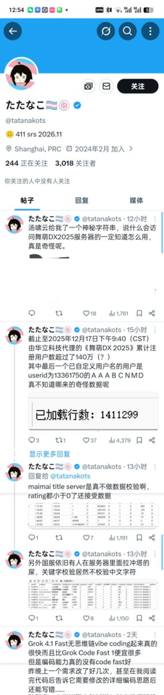
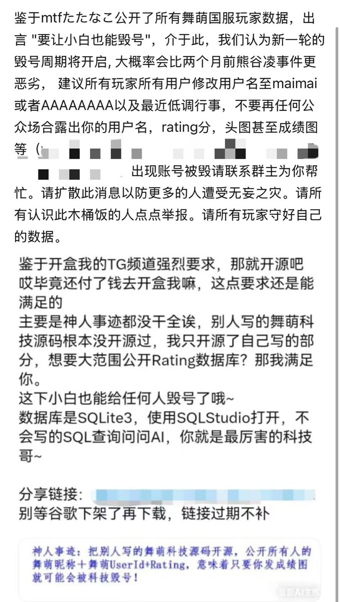
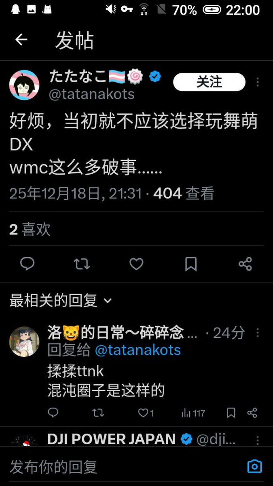

小虚空🍥
@tokerumaisurii
@BAshirasu_1226



小虚空🍥
@tokerumaisurii
@k49ur473 那她毁了几个号？0个？那为什么不先盒那些去毁过人号的人？
那她甩的库有多少部分，是只有她或者说凭借她的职位、凭借公司对她的信任才能获取到的？没有？任何职员非职员随便拖库？那为什么不先盒管理不善流出数据的官方？
Hayase.TPZ🍥🏳️⚧️
@BAshirasu_1226
首先我不是mtf，然后舞萌毁号神人最该万死👊😡
虽然我也是神人，我至少不会去神其他人，最多搞搞抽象。音游圈和跨圈神人瓜吃过很多，但是这样引起公愤的对于我来说还是第一个。已严厉批斗😅 https://t.co/bL6S5uUNJz